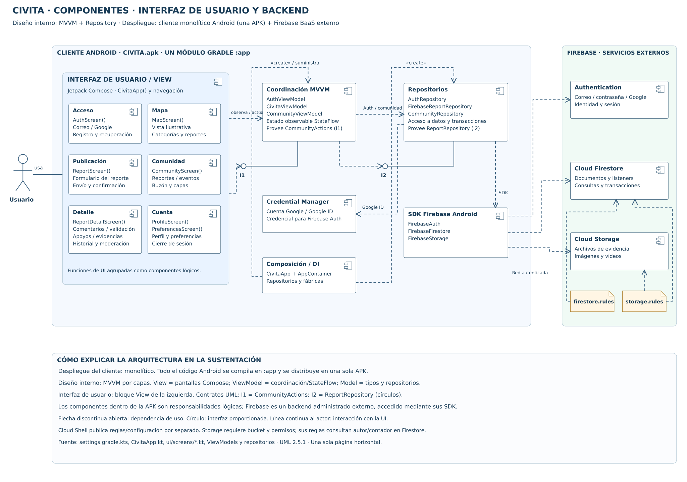
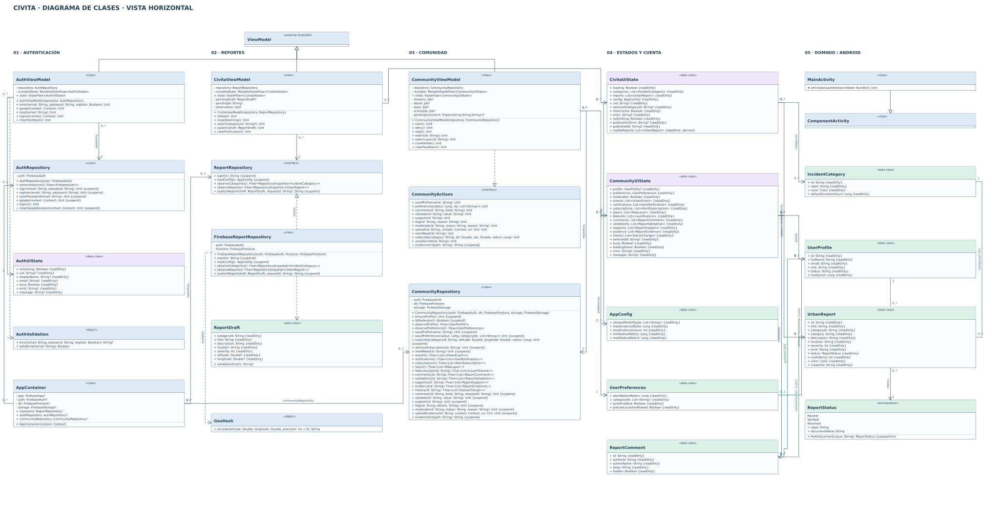

Cliente Android monolítico (una APK / :app), organizado con MVVM, Repository e inyección manual; Firebase BaaS externo.

Abre el PDF o SVG y amplía para revisar atributos, operaciones y cardinalidades.
